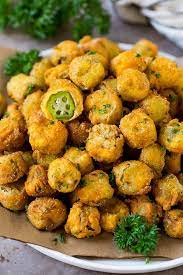

FRIED OKRA

Southern-style Fried Okra
Fried okra is a dish popular in the southern parts of the United States. I grew up eating (and loving) this dish, and to this
day it remains one of my all time favorites. All it takes is some okra, a breading of your choice, and some oil to fry it in.
Ingredients
- Okra (fresh or frozen)
- Panko bread crumbs
- Peanut Oil (or vegetable oil, but peanut tastes better)
Steps
- Heat 3 Cups of oil in a pot
- Cut okra into ~1/2 - 3/4" pieces
- Dip okra in eggwash and then into the panko crumbs
- Fry okra until golden brown
- Enjoy!
Return to recipes